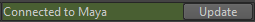

您可以使用 Mudbox“文件”(File)菜单中的“发送到 Maya”(Send to Maya)选项，将对象从 Mudbox 发送到 Maya。您可以发送在 Mudbox 中创建的新对象或更新最初从 Maya 发送到 Mudbox 的对象。在 Mudbox 中将绘制层或雕刻层应用于对象之后，可以使用与“发送到 Maya”(Send to Maya)选项关联的首选项选择将这些层发送到 Maya 的方式。
将对象从 Mudbox 发送到 Maya
有关 Mudbox 中的“发送首选项”(Send Preferences)的详细信息，请参见 Mudbox 帮助。例如，可以对雕刻层首选项进行设置，以确定在发送到 Maya 时是否将雕刻层转化为融合变形。
连接了应用程序时，状态栏中将显示连接状态指示器 。